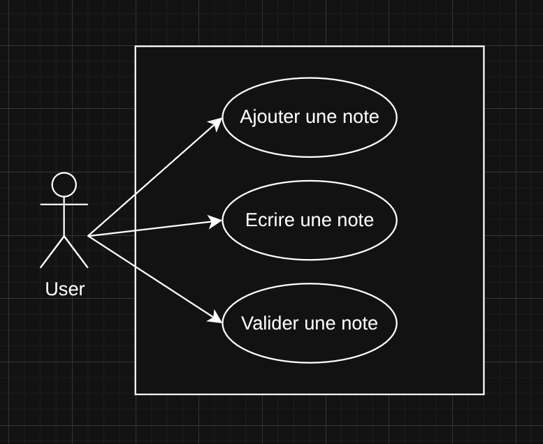
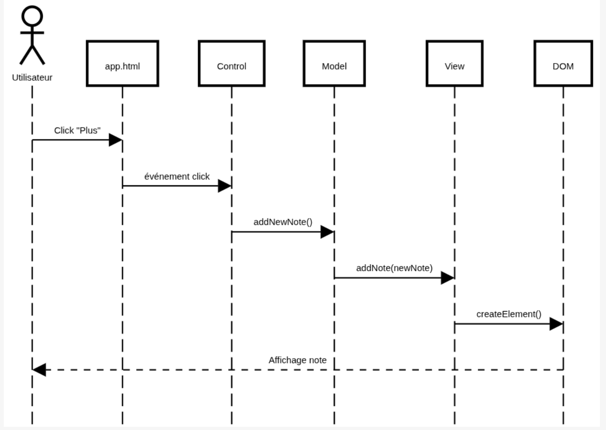
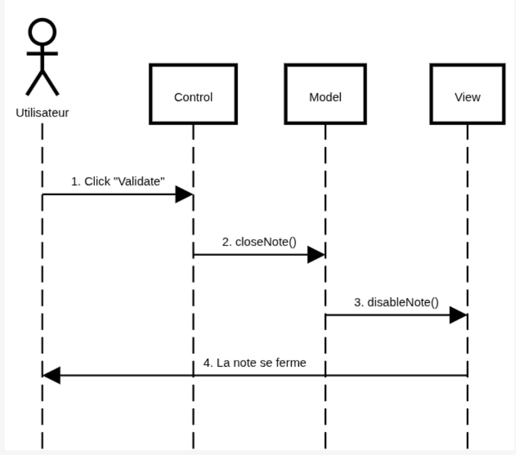

Analyse UML - Application Notes
Description du Projet
L'application "Calepin" est une application web simple de prise de notes
2. Diagramme de Cas d'Utilisation (Use Case)

3. Diagramme de Séquence
Ajouter une note

Valider une note

Scénario nominal 1
- L'utilisateur clique sur le bouon +
- Le système crée une nouvelle note avec ID
- Le système ajoute la note au tableau de notes déjà existant
- Le système génère une card
- La card est ajoutée à "Calepin"
Scénario nominal 2
- Le user saisit du texte dans le champ de la note
- Il clique sur le bouton pour valider
- Le système récup la note et le texte saisi
- Le système met à jour le contenu de la note
- Le système change la card
- Le système affiche le contenu
- Le titre de la note devient vert
Interventions pour moderniser le code
- Respect plus stricte du MVC
- Ajouter persistence des données (comme localStorage)
- Utilisation de var au lieu de const/let